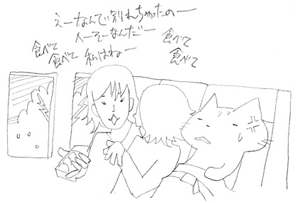
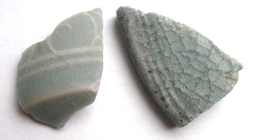
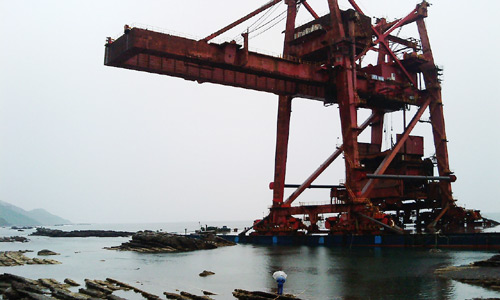
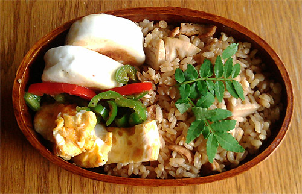
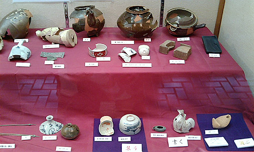
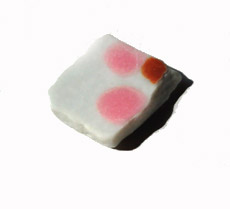

かに風味ブログ
-
のびてます
びよーん。 のびてますが元気です。あつい。 ミケ。お盆で美味しいご飯をくれるお家が留守のようで、しばらくぶりに遊びにきたです。 ご飯たべて、お水のんで、遊んで攻撃。 しばしエアコンですやすや。 来週…

-
夏ですがな
ひさしぶりに今日は会社やすみましたー。 まーぼちぼち夏バテ気味だったのと、ちょっと忙しさの谷間だったので丁度良いやとお休み。 暑すぎて、浜も行けず。 まー休めるときにはしっかり休めと午前中。ほんのり…
-
にわのにぎわい
イタリアントマト。どうにも勢いが止まらず。大豊作でした。 しかし生食はなんとも難しいお味。乾燥地や痩せた土地に強いのが、放置プレイ栽培で功を奏したのか。 小玉スイカ。まだ未収穫。現在ミニ小玉スイカ…

-
てんぷら
えへへ。銀座で天麩羅いただきました。 早松。香りがいいなぁ。 車えび三本。ぜいたくだー。 椎茸にきす。椎茸には海老が詰めてあるのかなー。んまい。 蟹とアスパラ 大将。天麩羅はやっぱ…

-
出光美術館の陶片室
流浪のわたくし。 ただいま再び関東に出張中。 暑いですなー。週末は時間をもらえたので、丸の内にある出光美術館に陶片を見に。 現在の出光美術館はルオー展で盛り上がっているのだけど、んもう陶片すごくてルオ…

-
青磁の鑑定結果
博物館から青磁の鑑定結果が出ましたー。 以下報告いただいたメールを要約いたしましたー。 【象嵌の入ったもの】 時期：12～13世紀 青磁の種類：高麗青磁 原型：おそらく合子 ※北部九州では出土も多い…

-
ここ最近のほにゃらら
なぜか空港にくす玉。引っ張りたい衝動に駆られながらも出発。 えーっと。品川駅でチャーハン。たまにこっちに戻ると人の多さでくーらくら。目にも耳にも鼻にも情報が大量に入ってきて、あーこれが都会とゆーもの…

-
おおきい漂着
こんな大きな漂着物は初めてです。 漂着物って言うのかなー？ 座礁船です。なんかクレーンをつんでいるみたい。手前に傘をさしている係員（？）がいるのだけど 比較すると…大きいでしょ？ どうなっちゃうのか…

-
最近の浜事情
雨やら出張やらバス旅やらで浜を歩いていない今日このごろー。 浜辺のガンマン 雨か殺人光線的紫外線日和かで、浜あるきにはちょいと辛い時期ですなー。。。 そんなこんなの浜の出会い。ちょい渋好みな…

-
ちょびっと日帰り【2日目】
2日目です。 馬刺しと芥子蓮根で飲み過ぎて、ちょっとダルー。 ＆雨なので、デジカメ持たず、ケータイで撮影ですー。 本日のバスはJRバス。なんか広くてきれいかもー。でもトイレ横の席はなんかイヤー。 …

-
ちょびっと日帰り
九州3日間バス乗り放題1万円とゆーのがあると知り、ちょびっと旅行。 長距離高速バスに乗るの久しぶりだー。 結構ゆったり目でらくちん。 なぜか一番前の席だった。一番前の席って、足が伸ばせないから あんま…

-
ダニ・カラヴァン
無性にダニ・カラヴァンの「ベレシート」が見たくて、霧島アートの森に。 ここはひょいと「上野の森の美術館にモネを見に行こうかな～」…というノリで行けるような…とこではなく、どちらかとゆーと「再来週に南ア…

-
凄まれるわたくし
本来かわゆいものに凄まれている昨今。 シャー！シャァァー！ ウソ付いたらハリセンボン飲～ます♪って言ってたけど、こりゃ無理だわ。

-
曲げわっぱのお弁当
予告通り、曲げわっぱのお弁当箱を購入。 楽天で破格曲げわっぱ。 なんてことない内容のお弁当でも、曲げわっぱに入れるだけで、4割ほど見た目の美味しさが上がる気がいたします。 ミョウガと塩昆布…

-
ちょいとあちこち
なんだかあちこち行ってました。 鹿児島に旅行→東京出張→母＆妹来訪 鹿児島は指宿に。 ついでに吹上浜に行ってみたりして。 ここらへんでよく浜に上がるという輸出用陶片に期待をしてみたのですが 予想に反…

-
博物館
青磁をみてもらおうと、博物館にメール。 早々に「詳しい者に見て貰うので、お持ちください」とお返事いただいて、博物館に行ってまいりました。 とりあえず、お預かりとゆーことで、担当の方にお渡しして、ちょ…

-
はるの陶片
サクラガイひろいの最中みつけた、サクラガイのような陶片 かわいい！ で、ほんもののサクラガイはこれだけ貯まりました。 まだまだ… そのほかの陶片などはこんなかんじです～

-
白磁
リクエストをいただいたので…白磁も こちらは内側かと。。。左側が見込みで、右端が縁です。 想像すると、たぶん直径10センチくらいの小皿なのではないかなーと。 白磁は難しくて、拾ってもしばらく手のひ…

-
青磁きらきら
青磁に恵まれた一日でしたー。 象嵌の入った青磁と陰刻の入った青磁。 陰刻の入ったものは水飴のような透明感。 こういうものは陶片だと断面がよく分かっていいですねー。 ほんのすこし彫ったあとに釉薬が溜まっ…
-
はるうらら
サクラガイがたくさんひらひら 普段あまり気にしていなかった近場の浜だけど、この日はなかなか好みな陶片もあったり。 しかしもののみごとにツメタガイに食べられちゃっているサクラガイばかり。 ちょっとひと瓶…